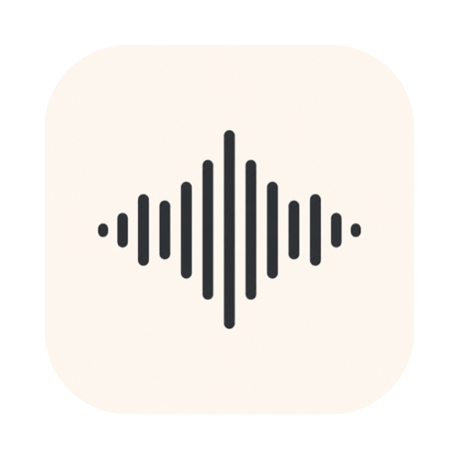
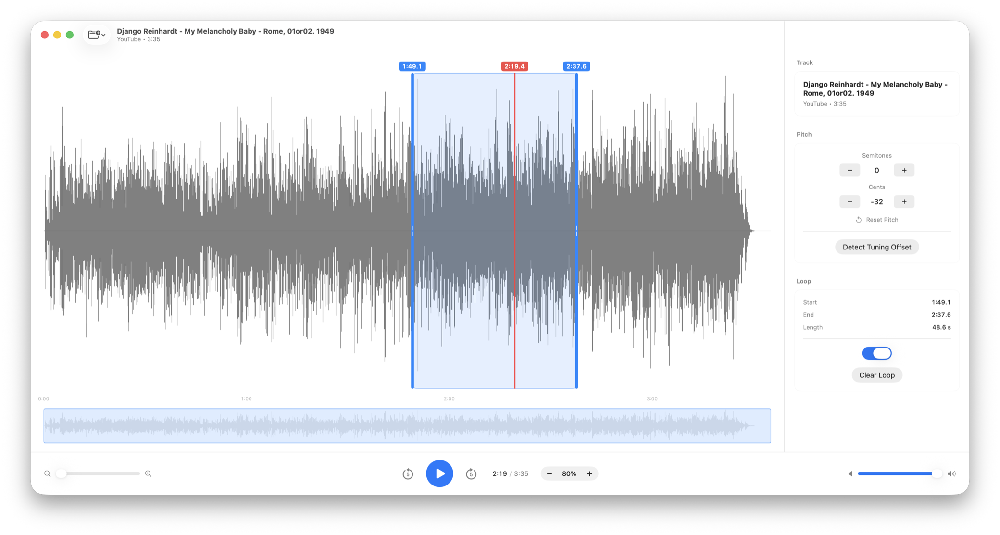

Slow it down. Loop it. Transcribe it.
A local-only macOS app for musicians. Open an audio file or a YouTube link, slow it down without changing pitch, shift the pitch, and loop short phrases while you work them out by ear.

If opening a file or YouTube link fails afterward, run this once in Terminal, then reopen Shed:
xattr -dr com.apple.quarantine /Applications/Shed.appEverything runs on your Mac — no account, no servers. yt-dlp and ffmpeg are bundled, so there’s nothing else to install.
Prefer Homebrew?
brew install --cask --no-quarantine willdickerson/tap/shedImport anything — local audio/video files or a YouTube URL.
Slow down — 30–100% speed with the pitch preserved.
Shift pitch — by semitones and cents, with a one-tap tuning-offset detector.
Loop a phrase — drag across the waveform and it loops seamlessly while you transcribe.